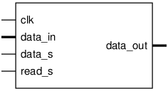
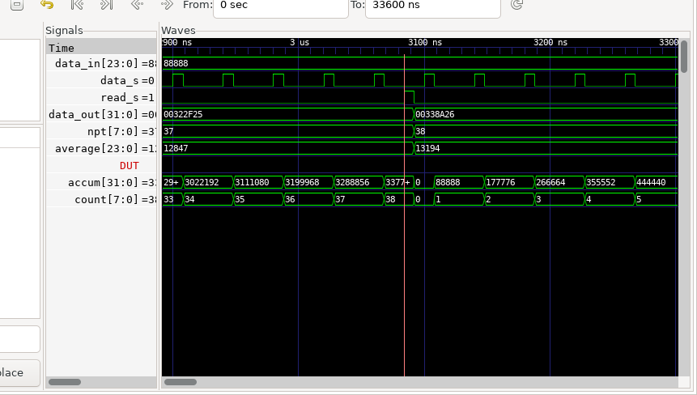

host_averager
¶
Pinout
¶

Ports
¶
Table 65
host_averager_port_table
¶
Signal
Direction
Description
clk
Input
data_in[23:0]
Input
data_s
Input
read_s
Input
data_out[31:0]
Output
Timing Diagram
¶

Bedrock
Navigation
Contents:
Bedrock Modules
DSP
afterburner
async_to_sync_reset_shift
banyan
banyan_mem
biquad
ccfilt
cic_interp
cic_multichannel
cic_simple_us
cic_wave_recorder
cim_12x
circle_buf
circle_buf_serial
complex_freq
complex_freq_wrap
complex_mul
complex_mul_flat
cpxmul_fullspeed
data_xdomain
demand_gpt
double_inte
double_inte_smp
doublediff
doublediff1
dpram
fchan_subset
fdownconvert
fifo
fiq_interp
flag_xdomain
flevel_set
freq_count
fwashout
half_filt
host_averager
Pinout
Ports
Timing Diagram
iirFilter
interp1
iq_chain4
iq_deinterleaver
iq_deinterleaver_multichannel
iq_double_inte
iq_inter
iq_intrp4
iq_mixer_multichannel
iq_modulator
isqrt
ll_prop
lpass1
minmax
mixer
mon_2chan
mon_2chiq
mon_chans
multi_sampler
multiply_accumulate
non_iq_interleaved_piloop
pdetect
ph_acc
phase_diff
phaset
phasex
reg_delay
rr_arb
sat_add
saturateMath
serialize
serializer_multichannel
shortfifo
timestamp
tt800
upconv
xy_pi_clip
Related Topics
Documentation overview
Bedrock Modules
Previous:
half_filt
Next:
iirFilter
Quick search